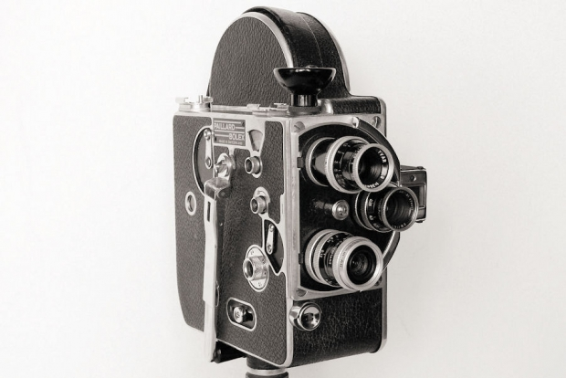
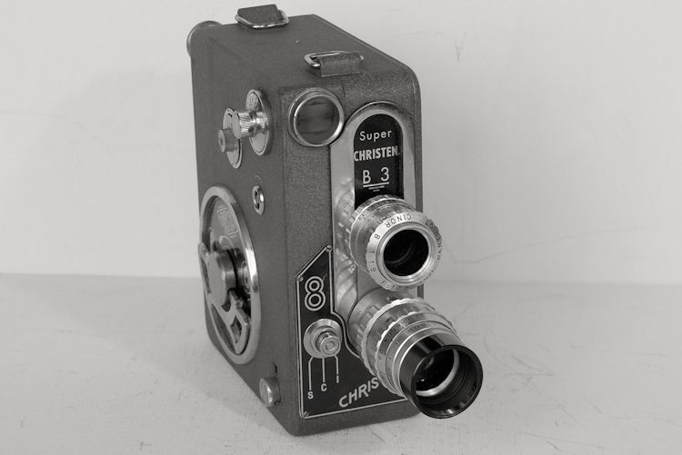
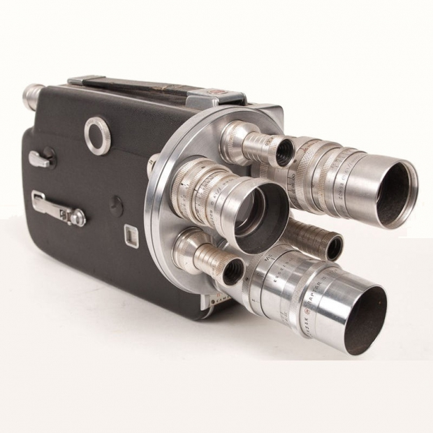
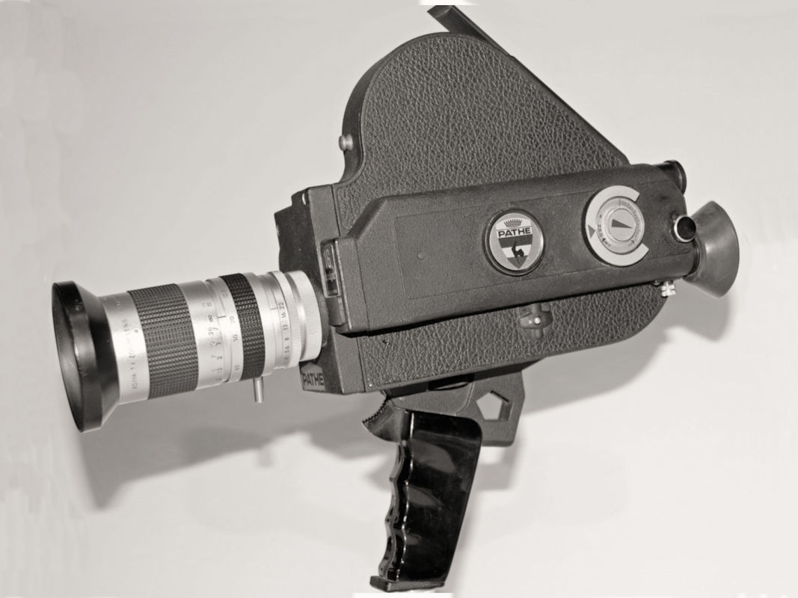

Accueil
Présentation
Boutique
Contacte
La boutique vintage
Vente de camèra vintage depuis 1950
Modèles :

Modele : BOLEX H8 Non-reflex
Date de sortie : 1947

Modele : Super Christen B3
Date de sortie : 1953

Modele : Cine Kodak K-100
Date de sortie : 1956

Modele : Pathe Webo 2ème génération
Date de sortie : 1972